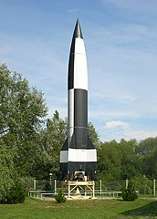
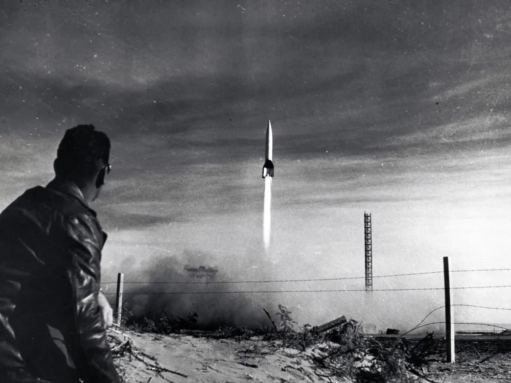
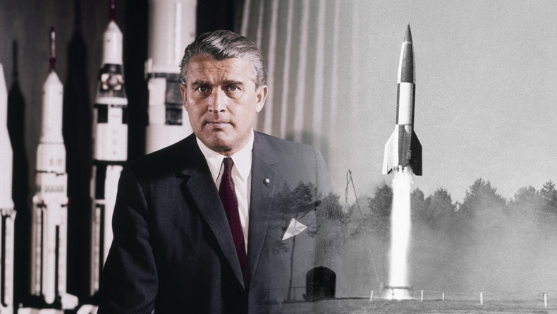

 Pierwszym prawdziwym krokiem ludzkości w przestrzeń kosmiczną nie był start satelity, ale wystrzelenie rakiety V2 w 1944 roku. V2, zaprojektowana przez niemieckiego inżyniera Wernhera von Brauna, była pierwszą rakietą, która osiągnęła granicę kosmosu, sięgając wysokości ponad 100 kilometrów – znanej jako linia Kármána, umownej granicy między atmosferą Ziemi a przestrzenią kosmiczną.
Rakieta V2 była początkowo bronią używaną podczas II wojny światowej, jednak jej konstrukcja i zdolność do osiągania ogromnych wysokości sprawiły, że stała się również fundamentem przyszłych badań kosmicznych. 20 czerwca 1944 roku, podczas jednego z testów w Peenemünde, rakieta V2 przekroczyła wysokość 176 kilometrów, co czyni ją pierwszym obiektem stworzonym przez człowieka, który wszedł w przestrzeń kosmiczną. 
 Po zakończeniu wojny technologia V2 została przejęta przez Stany Zjednoczone i Związek Radziecki, a wiedza zdobyta przy jej budowie położyła podwaliny pod późniejsze eksploracje kosmosu. Wernher von Braun, główny konstruktor V2, odegrał kluczową rolę w amerykańskim programie kosmicznym, prowadząc rozwój rakiety Saturn V, która później umożliwiła lądowanie na Księżycu.